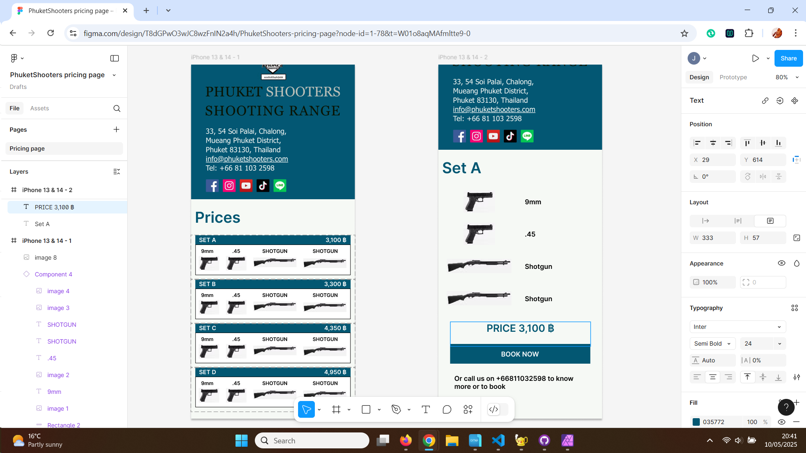
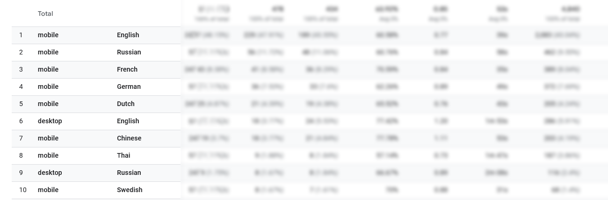
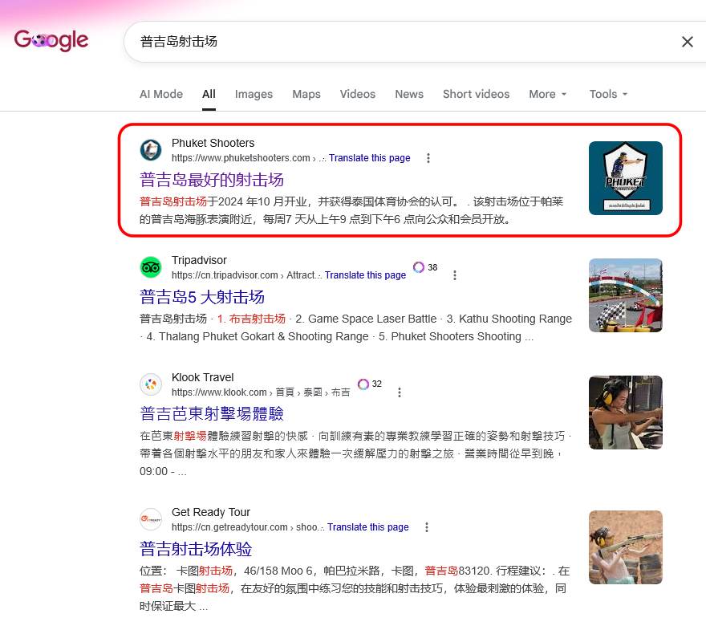
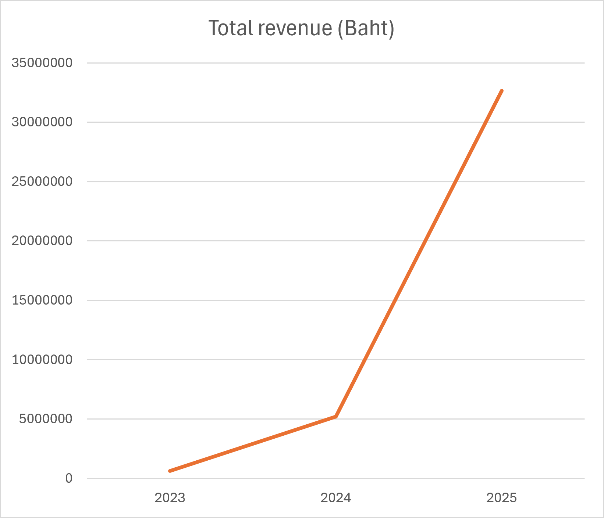
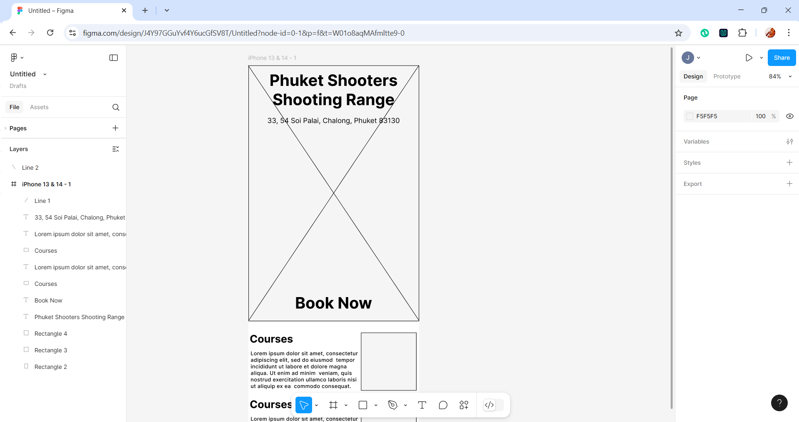
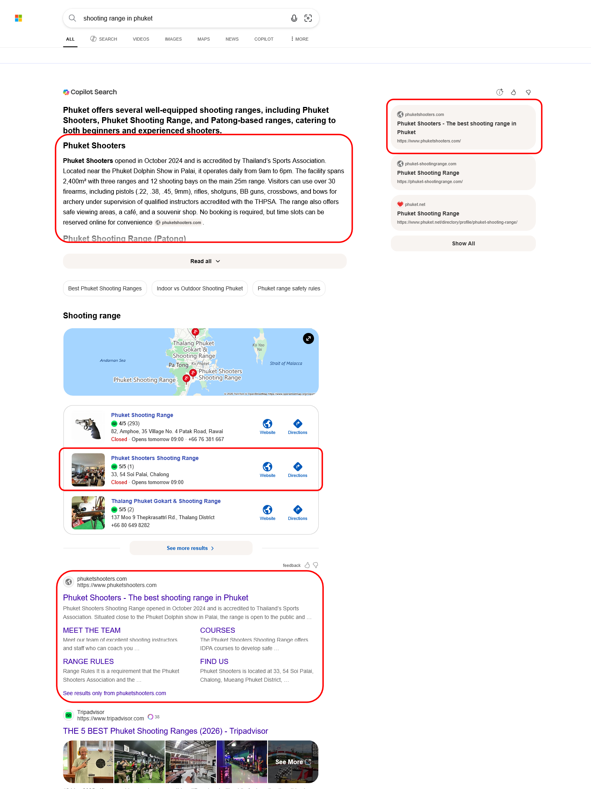
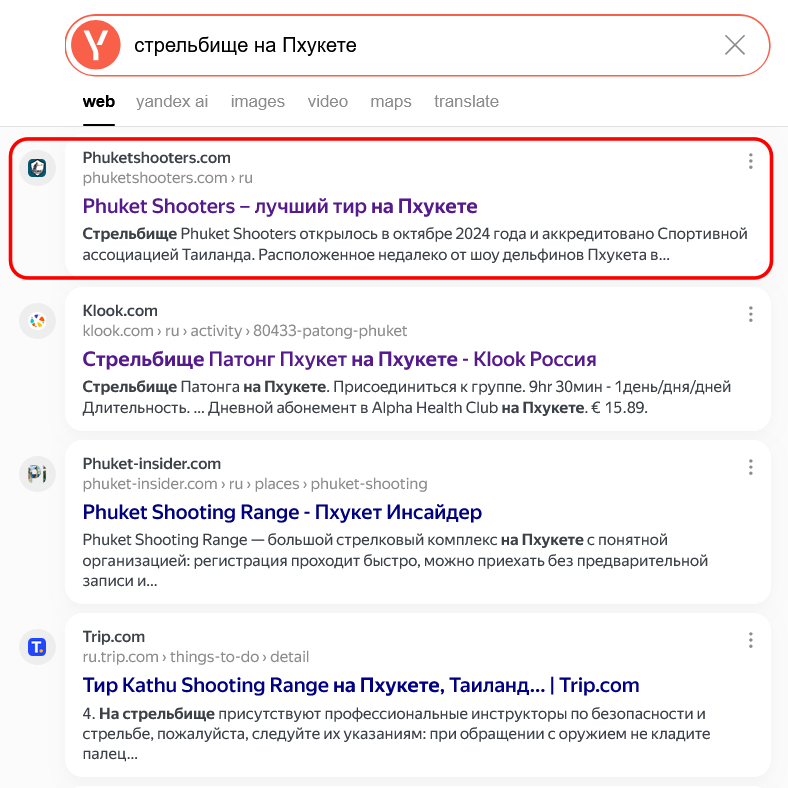

Industry: Travel, Tourism and Leisure
I created and grew the digital product for a new leisure business, taking responsibility for the digital channel from initial research and product strategy through UX/UI design, content, development decisions, multilingual SEO, analytics and continuous optimisation. The product launched in five languages, achieved strong organic search visibility and contributed to substantial commercial growth, with company revenue increasing by more than 600% and approximately 15-25% attributed to the digital channel.
Product Design - UX Research - Analytics (GA4, Metrika) - SEO - Multilingual - Figma - Conversion optimisation - Digital product ownership - End-to-end




Two investors spotted a market gap for a shooting range in Phuket. This was to be a thoroughly professional affair with qualified ex-military or police instructors, close links with professional associations and formal training courses: Quality and safety were not negotiable.
Face-to-face business operations were operational but the investors needed a digital presence for generating local and international leads.
Enter me.
First to understand was what the investors and business owner considered to be business success. I sensed potential for growth but much more work with the investors and business owner was needed to make this live. We talked to clarify what they needed.
I dived in, learning and adapting as I went, and took ownership of this product.
As the product owner/manager of the digital channel, I created the digital strategy, vision, identified the market, learned how the business actually operated, and figured out what would increase growth. Key business challenges like the excessive commissions paid to travel agents and local transport operators were identified along with how these might be turned into opportunities.
Discoveries: The key market segment were tourists already in Thailand, particularly but not only Phuket with most of the rest tourists coming to Thailand. The business had to be multi-lingual. Current social media channels were identified along with any controllers and a brief competitor analysis was merged with business requirements to define the project's direction and scope.
Support was enrolled from local partners using a commission-based model and the basics of the channel were set up.
Outcomes: A baptism of fire with an immediate deep dive into how real-world Thai business works. Aspects like commission-based recommendations were a surprise but also added colour to understanding what an online showcase could bring.
Research showed the channel needed a mobile-first strategy. Users were tourists and most likely to be using their phones.
Wireframes and user journeys (initially hand-drawn but soon after in Figma) were shared with the investors and business owner.
The company was not ready for online bookings yet so booking requests were a compromise that worked into commission-based partnerships at low cost and little change to the daily business operations.

Outcomes: We had a direction for design and content with stakeholder buy-in.
Main content would be in English, Thai, Arabic, Chinese and Russian. Using tourist data and similar businesses as estimators, we predicted that many customers would be speaking these languages and meeting them halfway could give the business an edge over competitors which operated in English only.
Content included page titles, meta information, alt-text, headings, text, images and videos and was initially created in English for which I organised translations. I also researched for SEO-positive keywords and ensured they were present.
Language selection had to be quick and mobile-friendly and was incorporated into navigation.
Outcomes: With all this work in place, I could begin designing pages to accommodate all the content - this was the fun part!
We targeted several search engines: Google, Bing (feeding into DuckDuckGo) and Yandex.
Tools like Google Search Console and the various webmaster tools along with analytics (GA4 and Yandex Metrica) helped track performance as did information from social media channels. Not all channels were kept updated and it remains a challenge to get them moving.
Accessibility was bolstered by adding meta tags across the entire site, a big task, and a basic level of testing done. Proper in-person testing was not possible due to resource constraints.
Outcomes: The site was ready for release. We did this as soon as possible so that it could be indexed and be included in customers' search results.
Company revenue increased over 600% for this company since the digital channel was launched. The business conservatively estimates that about one quarter of this revenue can be sourced to this digital channel.
Search engine ranking for a range of search terms across multiple languages and search engines started from nothing and has resulted in many first-ranked results, particularly for more niche segments. Even for the more mainstream customers, ranking is mostly top-five.
GA4 confirmed the market research that most users were tourists from overseas, used mobile, and used a number of languages.
SEO work has been successful with top-five rankings (often mixed with generic sites like TripAdvisor and trip.com) for many common search phrases. This is tracked regularly to identify improvements in content. The company often appears in a feature snippet (AI summary, business promotion) as seen below.


Revenue increased as did increased search ranking across languages, search engines and search phrases.
Compared to 2025, the submission start rate for bookings increased to 21.6%, up from 10.8%. This is reflected in an increased number of calls to the business but it's difficult to partition out whether the digital product is responsible for that data. WhatsApp Business is being trialled as an alternative means of booking.
The bookings form conversion rate of was 11.9%, up from 8.1% so users are more likely to use the form than just view it and go elsewhere. The bookings form completion rate has, however, dropped to 55% from 75% and research will find out why this is happening. Design improvements to recover the completion rate without lowering the form completion rate will be made.
The home page is being redesigned (see below) to accomodate a better information design. This is primarily in Figma but also with AI as an instant reviewer. AI does the job reasonably well but care needs to be taken because it doesn't always understand the business as well as myself. The header is also being looked at carefully because it occupies a lot of screen space.
Content is gradually modified to improve search engine rankings and consequent increased traffic, and to improve the number of customers making a booking . As a product owner, my job is to monitor and improve the product continually.